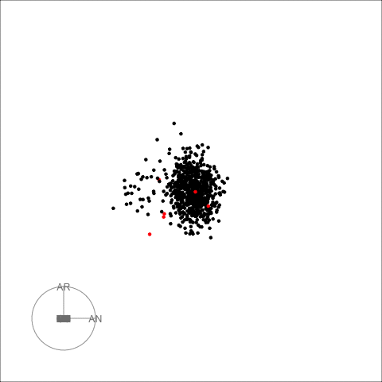

composits
composits.Rmd
library(composits)
library(ggplot2)
library(forecast)
library(dplyr)
#>
#> Attaching package: 'dplyr'
#> The following objects are masked from 'package:stats':
#>
#> filter, lag
#> The following objects are masked from 'package:base':
#>
#> intersect, setdiff, setequal, union
library(tidyr)
library(stringr)
library(broom)
library(rgdal)
#> Loading required package: sp
#> Please note that rgdal will be retired by the end of 2023,
#> plan transition to sf/stars/terra functions using GDAL and PROJ
#> at your earliest convenience.
#>
#> rgdal: version: 1.5-31, (SVN revision 1171)
#> Geospatial Data Abstraction Library extensions to R successfully loaded
#> Loaded GDAL runtime: GDAL 3.4.1, released 2021/12/27
#> Path to GDAL shared files: C:/Users/sevva/OneDrive/Documents/R/win-library/4.1/rgdal/gdal
#> GDAL binary built with GEOS: TRUE
#> Loaded PROJ runtime: Rel. 7.2.1, January 1st, 2021, [PJ_VERSION: 721]
#> Path to PROJ shared files: C:/Users/sevva/OneDrive/Documents/R/win-library/4.1/rgdal/proj
#> PROJ CDN enabled: FALSE
#> Linking to sp version:1.4-7
#> To mute warnings of possible GDAL/OSR exportToProj4() degradation,
#> use options("rgdal_show_exportToProj4_warnings"="none") before loading sp or rgdal.The goal of composits is to find outliers in compositional,
multivariate and univariate time series. It is an outlier ensemble
method that uses the outlier detection methods from R packages
forecast, tsoutliers, anomalize
and otsad. All the options provided in those packages can
be included in the calls for each of the methods used in the ensemble
function so that the user can create a more customize ensemble.
As describe in the paper four dimension reduction methods are used in the multivariate ensemble PCA, DOBIN, ICS and ICA. It is recomended that users verified the scaling and centering options of these methods for each particular example.
Univariate time series outliers
This example uses a univariate time series containing the daily gold
prices from the R package forecast.
gold2 <- forecast::na.interp(gold)
out <- uv_tsout_ens(gold2)
#> Converting from tbl_df to tbl_time.
#> Auto-index message: index = date
#> frequency = 7 days
#> trend = 91 days
inds <- names(which(table(out$outliers) > 2))
ts_gold <- dplyr::as_tibble(gold2) %>% mutate(t = 1:length(gold2)) %>% rename(value = x)
ggplot(ts_gold, aes(x=t, y=value)) +
geom_line() +
geom_vline(xintercept =as.numeric(inds), color="red", alpha=0.8, size=0.5, linetype ='dashed') + ylab("Gold prices") +
theme_bw()
#> Don't know how to automatically pick scale for object of type ts. Defaulting to continuous.The red dashed vertical lines show the time points that have been picked by 3 or more outlier detection methods.
Next we look at the quarterly production of woollen yarn in
Australia. This time series is also taken from the R package
forecast.
out <- uv_tsout_ens(woolyrnq)
#> Converting from tbl_df to tbl_time.
#> Auto-index message: index = date
#> frequency = 7 days
#> trend = 59.5 days
inds <- names(which(table(out$outliers) > 2))
ts_wool <- dplyr::as_tibble(woolyrnq) %>% mutate(t = 1:length(woolyrnq)) %>% rename(value = x)
ggplot(ts_wool, aes(x=t, y=value)) +
geom_line() +
geom_vline(xintercept =as.numeric(inds), color="red", alpha=0.8, size=0.5, linetype ='dashed') + ylab("Woollen Yarn Production") +
theme_bw()
#> Don't know how to automatically pick scale for object of type ts. Defaulting to continuous.
Multivariate time series outliers
This example includes EU stock market data from the package datasets. It contains the daily closing prices of 4 European stock indices: Germany DAX, Switzerland SMI, France CAC, and UK FTSE. First we plot the data.
stpart <- EuStockMarkets[1:600, ]
stpart <- EuStockMarkets[1:600, ]
as_tibble(stpart) %>% mutate(t = 1:n()) %>%
pivot_longer(cols=1:4) %>%
ggplot2::ggplot( ggplot2::aes(x = t, y = value, color = name)) + ggplot2::geom_line() + ggplot2::theme_bw() 
Then we find multivariate outliers. To find the multivariate
outliers, first we decompose the time series to univariate outliers by
using Principle Component Analysis (PCA), Independent Component Analysis
(ICA), DOBIN (Distance based Outlier BasIs using Neighbours) and ICS
(Invariant Coordinate Selection) decomposition methods. The
fast=TRUE option leaves out ICS decomposition. Then for a
selected number of components (default being 2) we find outliers using
the univariate time series ensemble. The outliers are given in the table
below.
out <- mv_tsout_ens(stpart, fast=TRUE)
#> Converting from tbl_df to tbl_time.
#> Auto-index message: index = date
#> frequency = 7 days
#> trend = 90.5 days
#> Converting from tbl_df to tbl_time.
#> Auto-index message: index = date
#> frequency = 7 days
#> trend = 90.5 days
#> Converting from tbl_df to tbl_time.
#> Auto-index message: index = date
#> frequency = 7 days
#> trend = 90.5 days
#> Converting from tbl_df to tbl_time.
#> Auto-index message: index = date
#> frequency = 7 days
#> trend = 90.5 days
#> Converting from tbl_df to tbl_time.
#> Auto-index message: index = date
#> frequency = 7 days
#> trend = 90.5 days
#> Converting from tbl_df to tbl_time.
#> Auto-index message: index = date
#> frequency = 7 days
#> trend = 90.5 days
#> Converting from tbl_df to tbl_time.
#> Auto-index message: index = date
#> frequency = 7 days
#> trend = 90.5 days
#> Converting from tbl_df to tbl_time.
#> Auto-index message: index = date
#> frequency = 7 days
#> trend = 90.5 days
#> Converting from tbl_df to tbl_time.
#> Auto-index message: index = date
#> frequency = 7 days
#> trend = 90.5 days
#> Converting from tbl_df to tbl_time.
#> Auto-index message: index = date
#> frequency = 7 days
#> trend = 90.5 days
#> Converting from tbl_df to tbl_time.
#> Auto-index message: index = date
#> frequency = 7 days
#> trend = 90.5 days
#> Converting from tbl_df to tbl_time.
#> Auto-index message: index = date
#> frequency = 7 days
#> trend = 90.5 days
out$outliers
#> Indices Total_Score Num_Coords Num_Methods DOBIN PCA ICA
#> 11 36 1.6928 3 3 0.5460645 0.6552774 0.4914581
#> 18 127 0.3120 1 1 0.3120000 0.0000000 0.0000000
#> 20 205 0.8160 3 2 0.2733508 0.4059739 0.1366754
#> 32 316 1.4400 3 2 0.4710592 0.6156465 0.3532944
#> 34 319 0.6880 2 2 0.1720000 0.0000000 0.5160000
#> 41 331 1.5008 3 3 0.2728727 0.4093091 0.8186182
#> 42 366 0.3120 1 1 0.0000000 0.3120000 0.0000000
#> 48 546 0.3120 1 1 0.3120000 0.0000000 0.0000000
#> forecast tsoutliers otsad anomalize Gap_Score_2
#> 11 0 1.248 0.320 0.1248 72
#> 18 0 0.312 0.000 0.0000 5
#> 20 0 0.624 0.192 0.0000 30
#> 32 0 1.248 0.192 0.0000 60
#> 34 0 0.624 0.064 0.0000 23
#> 41 0 1.248 0.128 0.1248 63
#> 42 0 0.312 0.000 0.0000 5
#> 48 0 0.312 0.000 0.0000 5
draw_table_html(out)| Indices | DOBIN | PCA | ICA | Num_Coords | forecast | tsoutliers | otsad | anomalize | Num_Methods | Gap_Score_2 | Total_Score | |
|---|---|---|---|---|---|---|---|---|---|---|---|---|
| 11 | 36 | 0.55 | 0.66 | 0.49 | 3 | 0 | 1.25 | 0.32 | 0.12 | 3 | 72 | 1.69 |
| 41 | 331 | 0.27 | 0.41 | 0.82 | 3 | 0 | 1.25 | 0.13 | 0.12 | 3 | 63 | 1.5 |
| 32 | 316 | 0.47 | 0.62 | 0.35 | 3 | 0 | 1.25 | 0.19 | 0 | 2 | 60 | 1.44 |
| 20 | 205 | 0.27 | 0.41 | 0.14 | 3 | 0 | 0.62 | 0.19 | 0 | 2 | 30 | 0.82 |
| 34 | 319 | 0.17 | 0 | 0.52 | 2 | 0 | 0.62 | 0.06 | 0 | 2 | 23 | 0.69 |
| 18 | 127 | 0.31 | 0 | 0 | 1 | 0 | 0.31 | 0 | 0 | 1 | 5 | 0.31 |
| 42 | 366 | 0 | 0.31 | 0 | 1 | 0 | 0.31 | 0 | 0 | 1 | 5 | 0.31 |
| 48 | 546 | 0.31 | 0 | 0 | 1 | 0 | 0.31 | 0 | 0 | 1 | 5 | 0.31 |
The decomposed time series is shown in the figure below.
plot_decomposed_all(obj=out, X = stpart)
animate_ts_ensemble(out, X= stpart, max_frames = 100)
The decomposition above shows three decomposition methods. If you
want to plot only one method, you can use the
plot_decomposed function. The outlying time-points are
shown in the figure above and below.
plot_decomposed(obj=out, X = stpart, method = "pca")Composite time series outliers
For this example we use daily mortality counts in Spain organised by autonomous communities provided by the Spanish government. The dataset records mortality counts from the 18th of April 2018 until the 31th of July 2020. To make the data compositional we divide the autonomous communities counts by the total count for each day.
Compositional data live on a simplex, because the sums add up to a constant. Before analysing such data, it is important to make the data unconstrained. We make the data unconstrained by using a coordinate transformation called the null space coordinate transformation. We use the multivariate outlier detection ensemble discussed above on these unconstrained data. More details are available in our paper.
First let us load this data and plot it.
data('spanish_morte')
df <- spanish_morte[[1]]
uniq_dates <- spanish_morte[[2]]
df2 <- cbind.data.frame(uniq_dates, df)
as_tibble(df2) %>%
pivot_longer(cols=2:20) %>%
ggplot2::ggplot( ggplot2::aes(x = uniq_dates, y = value, color = name)) + ggplot2::geom_line() + ggplot2::theme_bw() 
Next we find the outliers using compositional time series outlier ensemble.
out <- comp_tsout_ens(df, fast=FALSE)
#> Converting from tbl_df to tbl_time.
#> Auto-index message: index = date
#> frequency = 7 days
#> trend = 91 days
#> Converting from tbl_df to tbl_time.
#> Auto-index message: index = date
#> frequency = 7 days
#> trend = 91 days
#> Converting from tbl_df to tbl_time.
#> Auto-index message: index = date
#> frequency = 7 days
#> trend = 91 days
#> Converting from tbl_df to tbl_time.
#> Auto-index message: index = date
#> frequency = 7 days
#> trend = 91 days
#> Warning in locate.outliers.oloop(y = y, fit = fit, types = types, cval = cval, :
#> stopped when 'maxit.oloop = 4' was reached
#> Converting from tbl_df to tbl_time.
#> Auto-index message: index = date
#> frequency = 7 days
#> trend = 91 days
#> Converting from tbl_df to tbl_time.
#> Auto-index message: index = date
#> frequency = 7 days
#> trend = 91 days
#> Converting from tbl_df to tbl_time.
#> Auto-index message: index = date
#> frequency = 7 days
#> trend = 91 days
#> Warning in locate.outliers.oloop(y = y, fit = fit, types = types, cval = cval, :
#> stopped when 'maxit.oloop = 4' was reached
#> Converting from tbl_df to tbl_time.
#> Auto-index message: index = date
#> frequency = 7 days
#> trend = 91 days
#> Converting from tbl_df to tbl_time.
#> Auto-index message: index = date
#> frequency = 7 days
#> trend = 91 days
#> Converting from tbl_df to tbl_time.
#> Auto-index message: index = date
#> frequency = 7 days
#> trend = 91 days
#> Converting from tbl_df to tbl_time.
#> Auto-index message: index = date
#> frequency = 7 days
#> trend = 91 days
#> Converting from tbl_df to tbl_time.
#> Auto-index message: index = date
#> frequency = 7 days
#> trend = 91 days
#> Converting from tbl_df to tbl_time.
#> Auto-index message: index = date
#> frequency = 7 days
#> trend = 91 days
#> Converting from tbl_df to tbl_time.
#> Auto-index message: index = date
#> frequency = 7 days
#> trend = 91 days
#> Converting from tbl_df to tbl_time.
#> Auto-index message: index = date
#> frequency = 7 days
#> trend = 91 days
#> Converting from tbl_df to tbl_time.
#> Auto-index message: index = date
#> frequency = 7 days
#> trend = 91 days
out$outliers
#> Indices Total_Score Num_Coords Num_Methods DOBIN PCA ICS
#> 10 608 1.601703 3 3 0 0.2786530 0.7110862
#> 15 614 1.225767 3 2 0 0.4746118 0.4037159
#> 18 617 2.843563 3 4 0 0.6098312 1.0761055
#> 19 618 1.871725 3 4 0 0.7117390 0.7370907
#> 20 619 2.280314 3 4 0 0.7073014 0.7324951
#> 21 620 2.121164 3 3 0 0.9823336 0.7236476
#> 22 621 1.712575 3 3 0 0.5693429 0.7264445
#> 23 622 1.899888 3 3 0 0.7224480 0.7481812
#> 24 623 1.491299 3 2 0 0.5774244 0.4911707
#> 25 624 1.491299 3 2 0 0.5774244 0.4911707
#> 26 625 1.491299 3 2 0 0.5774244 0.4911707
#> 27 626 1.491299 3 2 0 0.5774244 0.4911707
#> 28 627 1.181512 3 2 0 0.5476652 0.2329284
#> 29 628 1.093001 3 3 0 0.5066381 0.2154791
#> 31 630 1.491299 3 2 0 0.5774244 0.4911707
#> 32 631 1.491299 3 2 0 0.5774244 0.4911707
#> 39 638 1.380427 3 3 0 0.4480469 0.2603095
#> ICA forecast tsoutliers otsad anomalize Gap_Score_2
#> 10 0.6119637 0.0000000 0.5632485 0.6638286 0.3746257 15
#> 15 0.3474396 0.0000000 0.0000000 0.6638286 0.5619386 6
#> 18 1.1576261 0.6195734 0.8448728 0.4425524 0.9365644 44
#> 19 0.4228956 0.6195734 0.2816243 0.2212762 0.7492515 21
#> 20 0.8405178 0.6195734 0.2816243 0.4425524 0.9365644 30
#> 21 0.4151828 0.9293600 0.0000000 0.4425524 0.7492515 27
#> 22 0.4167874 0.9293600 0.0000000 0.2212762 0.5619386 17
#> 23 0.4292586 0.9293600 0.0000000 0.2212762 0.7492515 22
#> 24 0.4227035 0.9293600 0.0000000 0.0000000 0.5619386 12
#> 25 0.4227035 0.9293600 0.0000000 0.0000000 0.5619386 12
#> 26 0.4227035 0.9293600 0.0000000 0.0000000 0.5619386 12
#> 27 0.4227035 0.9293600 0.0000000 0.0000000 0.5619386 12
#> 28 0.4009183 0.6195734 0.0000000 0.0000000 0.5619386 5
#> 29 0.3708844 0.3097867 0.0000000 0.2212762 0.5619386 3
#> 31 0.4227035 0.9293600 0.0000000 0.0000000 0.5619386 12
#> 32 0.4227035 0.9293600 0.0000000 0.0000000 0.5619386 12
#> 39 0.6720703 0.0000000 0.5632485 0.4425524 0.3746257 9
draw_table_html(out, uniq_dates)| Indices | DOBIN | PCA | ICS | ICA | Num_Coords | forecast | tsoutliers | otsad | anomalize | Num_Methods | Gap_Score_2 | Total_Score | |
|---|---|---|---|---|---|---|---|---|---|---|---|---|---|
| 18 | 2020-03-19 | 0 | 0.61 | 1.08 | 1.16 | 3 | 0.62 | 0.84 | 0.44 | 0.94 | 4 | 44 | 2.84 |
| 20 | 2020-03-21 | 0 | 0.71 | 0.73 | 0.84 | 3 | 0.62 | 0.28 | 0.44 | 0.94 | 4 | 30 | 2.28 |
| 21 | 2020-03-22 | 0 | 0.98 | 0.72 | 0.42 | 3 | 0.93 | 0 | 0.44 | 0.75 | 3 | 27 | 2.12 |
| 23 | 2020-03-24 | 0 | 0.72 | 0.75 | 0.43 | 3 | 0.93 | 0 | 0.22 | 0.75 | 3 | 22 | 1.9 |
| 19 | 2020-03-20 | 0 | 0.71 | 0.74 | 0.42 | 3 | 0.62 | 0.28 | 0.22 | 0.75 | 4 | 21 | 1.87 |
| 22 | 2020-03-23 | 0 | 0.57 | 0.73 | 0.42 | 3 | 0.93 | 0 | 0.22 | 0.56 | 3 | 17 | 1.71 |
| 10 | 2020-03-10 | 0 | 0.28 | 0.71 | 0.61 | 3 | 0 | 0.56 | 0.66 | 0.37 | 3 | 15 | 1.6 |
| 24 | 2020-03-25 | 0 | 0.58 | 0.49 | 0.42 | 3 | 0.93 | 0 | 0 | 0.56 | 2 | 12 | 1.49 |
| 25 | 2020-03-26 | 0 | 0.58 | 0.49 | 0.42 | 3 | 0.93 | 0 | 0 | 0.56 | 2 | 12 | 1.49 |
| 26 | 2020-03-27 | 0 | 0.58 | 0.49 | 0.42 | 3 | 0.93 | 0 | 0 | 0.56 | 2 | 12 | 1.49 |
| 27 | 2020-03-28 | 0 | 0.58 | 0.49 | 0.42 | 3 | 0.93 | 0 | 0 | 0.56 | 2 | 12 | 1.49 |
| 31 | 2020-04-01 | 0 | 0.58 | 0.49 | 0.42 | 3 | 0.93 | 0 | 0 | 0.56 | 2 | 12 | 1.49 |
| 32 | 2020-04-02 | 0 | 0.58 | 0.49 | 0.42 | 3 | 0.93 | 0 | 0 | 0.56 | 2 | 12 | 1.49 |
| 39 | 2020-04-09 | 0 | 0.45 | 0.26 | 0.67 | 3 | 0 | 0.56 | 0.44 | 0.37 | 3 | 9 | 1.38 |
| 15 | 2020-03-16 | 0 | 0.47 | 0.4 | 0.35 | 3 | 0 | 0 | 0.66 | 0.56 | 2 | 6 | 1.23 |
| 28 | 2020-03-29 | 0 | 0.55 | 0.23 | 0.4 | 3 | 0.62 | 0 | 0 | 0.56 | 2 | 5 | 1.18 |
| 29 | 2020-03-30 | 0 | 0.51 | 0.22 | 0.37 | 3 | 0.31 | 0 | 0.22 | 0.56 | 3 | 3 | 1.09 |
The table above shows the outlying dates and the associated scores. The outlying dates correspond to the COVID-19 outbreak. We can see the decomposed univariate time series in the following plot and the spike around mid March in 2020.
plot_decomposed_all(obj=out, X = df)
# animate_ts_ensemble(out, X= df, max_frames = 1)
animate_ts_ensemble(out, X= df, max_frames = 100)
Next we apportion the outlying scores back to the autonomous communities. This is another coordinate transformation from the outlier score space to the original coordinate space.
apportioned <- apportion_scores_comp(out)
apportioned1 <- cbind.data.frame(colnames(df), apportioned$scores_out)
colnames(apportioned1)[1] <- 'reg'
colnames(apportioned1)[2:dim(apportioned1)[2]] <- paste(uniq_dates[out$outliers$Indices])
apportioned1
#> reg 2020-03-10 2020-03-16 2020-03-19 2020-03-20 2020-03-21 2020-03-22
#> 1 AN 0.26234314 0.27086401 0.35523067 0.36457080 0.35896558 0.46841113
#> 2 AR 0.06935137 0.04206066 0.10863452 0.06779140 0.07818901 0.06855425
#> 3 AS 0.05089412 0.04420694 0.07148989 0.05930515 0.06766854 0.07195583
#> 4 IB 0.03624756 0.03011969 0.05126000 0.04084778 0.04745111 0.04863111
#> 5 CN 0.14298252 0.10841008 0.20281046 0.16291917 0.17063481 0.18427607
#> 6 CB 0.26787686 0.16095386 0.39055200 0.27665854 0.28411586 0.27879480
#> 7 CL 0.19873650 0.13264463 0.28574950 0.21231085 0.22362886 0.22578703
#> 8 CM 0.25693517 0.18892230 0.36836216 0.27176160 0.31659990 0.30484925
#> 9 CT 0.33352005 0.33075110 0.62807450 0.48956779 0.57694814 0.60935943
#> 10 VC 0.21071790 0.16140010 0.30215510 0.21910124 0.27226619 0.25204267
#> 11 EX 0.09702405 0.06212425 0.14008580 0.10147228 0.10730059 0.10568510
#> 12 GA 0.21259019 0.16497843 0.30183723 0.23840349 0.26252482 0.27356434
#> 13 MD 0.53021838 0.39737059 0.81861972 0.49442127 0.72247173 0.56944587
#> 14 MC 0.14858458 0.10195323 0.21315220 0.16025201 0.16986504 0.17282719
#> 15 NC 0.03428727 0.02196294 0.05125471 0.03749891 0.03836943 0.03899566
#> 16 PV 0.12319000 0.08131515 0.17763915 0.12892879 0.13966530 0.13646745
#> 17 RI 0.07938753 0.04719364 0.11584586 0.08275159 0.08346584 0.08292969
#> 18 CE 0.09975587 0.05980609 0.14439118 0.10427380 0.10451678 0.10495051
#> 19 ML 0.05821079 0.03548461 0.08410963 0.06144238 0.06130915 0.06236365
#> 2020-03-23 2020-03-24 2020-03-25 2020-03-26 2020-03-27 2020-03-28 2020-03-29
#> 1 0.35918588 0.37629471 0.32953984 0.32953984 0.32953984 0.32953984 0.28803538
#> 2 0.06952281 0.06775206 0.05117204 0.05117204 0.05117204 0.05117204 0.02548096
#> 3 0.06038423 0.06073345 0.05378325 0.05378325 0.05378325 0.05378325 0.04454189
#> 4 0.04179128 0.04172654 0.03664436 0.03664436 0.03664436 0.03664436 0.02943867
#> 5 0.16351266 0.16533043 0.13189438 0.13189438 0.13189438 0.13189438 0.08762879
#> 6 0.27800022 0.27689973 0.19582044 0.19582044 0.19582044 0.19582044 0.08076874
#> 7 0.21392237 0.21383235 0.16137873 0.16137873 0.16137873 0.16137873 0.08781762
#> 8 0.27898851 0.27549731 0.22984753 0.22984753 0.22984753 0.22984753 0.16105017
#> 9 0.45671831 0.50309266 0.40239995 0.40239995 0.40239995 0.40239995 0.32635425
#> 10 0.22793130 0.22282043 0.19636335 0.19636335 0.19636335 0.19636335 0.15216821
#> 11 0.10241532 0.10194792 0.07558190 0.07558190 0.07558190 0.07558190 0.03801510
#> 12 0.24157074 0.24237326 0.20071683 0.20071683 0.20071683 0.20071683 0.14352136
#> 13 0.53504852 0.50289179 0.48345087 0.48345087 0.48345087 0.48345087 0.41121416
#> 14 0.16157390 0.16167179 0.12403882 0.12403882 0.12403882 0.12403882 0.07148969
#> 15 0.03713091 0.03766790 0.02672065 0.02672065 0.02672065 0.02672065 0.01214629
#> 16 0.13067521 0.12977993 0.09893001 0.09893001 0.09893001 0.09893001 0.05448674
#> 17 0.08259067 0.08277170 0.05741694 0.05741694 0.05741694 0.05741694 0.02217372
#> 18 0.10429232 0.10435020 0.07276156 0.07276156 0.07276156 0.07276156 0.02861850
#> 19 0.06137859 0.06154640 0.04317146 0.04317146 0.04317146 0.04317146 0.01768146
#> 2020-03-30 2020-04-01 2020-04-02 2020-04-09
#> 1 0.23871590 0.32953984 0.32953984 0.17432492
#> 2 0.02697882 0.05117204 0.05117204 0.03902509
#> 3 0.04027539 0.05378325 0.05378325 0.03557586
#> 4 0.02709441 0.03664436 0.03664436 0.02496727
#> 5 0.07919298 0.13189438 0.13189438 0.07866136
#> 6 0.08121234 0.19582044 0.19582044 0.11622027
#> 7 0.08373658 0.16137873 0.16137873 0.09862652
#> 8 0.15431326 0.22984753 0.22984753 0.16035754
#> 9 0.40999295 0.40239995 0.40239995 0.36274625
#> 10 0.14710266 0.19636335 0.19636335 0.14748608
#> 11 0.03718032 0.07558190 0.07558190 0.04674467
#> 12 0.13183196 0.20071683 0.20071683 0.12854454
#> 13 0.42027535 0.48345087 0.48345087 0.43462088
#> 14 0.06749890 0.12403882 0.12403882 0.07629760
#> 15 0.01314871 0.02672065 0.02672065 0.01656009
#> 16 0.05305206 0.09893001 0.09893001 0.06329514
#> 17 0.02241059 0.05741694 0.05741694 0.03342103
#> 18 0.02835092 0.07276156 0.07276156 0.04134567
#> 19 0.01726923 0.04317146 0.04317146 0.02428734Next we plot this using the map of Spain.
shapefile_ccaa <- readOGR(dsn="ComunidadesAutonomas_ETRS89_30N/Comunidades_Autonomas_ETRS89_30N.shp")
#> Warning in OGRSpatialRef(dsn, layer, morphFromESRI = morphFromESRI, dumpSRS =
#> dumpSRS, : Discarded datum European_Terrestrial_Reference_System_1989 in Proj4
#> definition: +proj=utm +zone=30 +ellps=GRS80 +towgs84=0,0,0,0,0,0,0 +units=m
#> +no_defs
#> OGR data source with driver: ESRI Shapefile
#> Source: "C:\Users\sevva\OneDrive\Documents\repos\composits\vignettes\ComunidadesAutonomas_ETRS89_30N\Comunidades_Autonomas_ETRS89_30N.shp", layer: "Comunidades_Autonomas_ETRS89_30N"
#> with 19 features
#> It has 3 fields
data_ccaa <- tidy(shapefile_ccaa)
#> Regions defined for each Polygons
nombres_ccaa <- tibble(shapefile_ccaa$Texto) %>%
mutate(id = as.character(seq(0, nrow(.)-1)))
reg <- c("AN", "AR", "AS", "PM", "CN", "CB", "CL", "CM",
"CT", "VC", "EX", "GA", "MD", "MU", "NA", "PV",
"LO", "CE", "CE")
nombres_ccaa <- tibble(reg) %>%
mutate(id = as.character(seq(0, nrow(.)-1)))
data_ccaa_mapa <- data_ccaa %>%
left_join(nombres_ccaa, by = "id")
df3 <- apportioned1 %>%
mutate(reg = str_replace(reg, "RI", "LO")) %>%
mutate(reg = str_replace(reg, "NC", "NA")) %>%
mutate(reg = str_replace(reg, "MC", "MU")) %>%
pivot_longer(-reg, names_to = "date", values_to = "score")
sp_data <- inner_join(data_ccaa_mapa, df3, by="reg") %>%
filter(reg != "CN")
sp_data %>%
ggplot() +
geom_polygon(aes(x= long, y = lat, group=group, fill=score),
color="black", size=0.2) +
theme_bw() +
scale_fill_distiller(palette = "YlOrBr", direction = 1) +
xlab("") +
ylab("") +
coord_fixed() +
facet_wrap(~date, ncol=5) +
theme(panel.grid.major = element_blank(),
panel.grid.minor = element_blank(),
axis.text.x = element_blank(),
axis.text.y = element_blank(),
axis.ticks = element_blank())
See our website or our paper (Kandanaarachchi et al. 2020) *** for more examples.